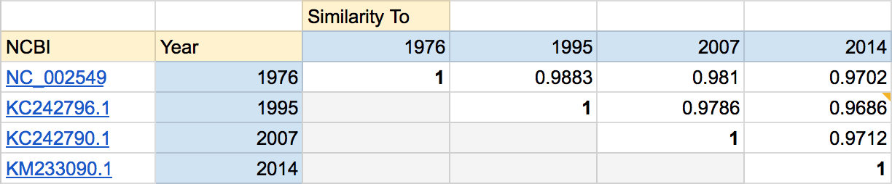
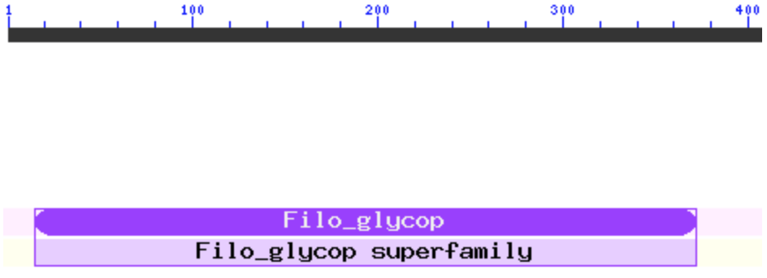

Illustrating evolution of EBOV Glycoprotein
Brendan, Zevvy, Eden
We wish to create a visual web product that illustrates the geographic, chronological, genetic, and biochemical diversity of the Ebolavirus glycoprotein (EBOV GP) evolution over the past 40 years.
This will be accomplished by specific case studies of, but not limited to, Ebolavirus outbreaks in Yambuku, Zaire (1976); Kiwit, Zaire (1995); Sierra Leon (2014).
Introduction
There are five strands of ebolavirus recognized by the International Committee on Taxonomy of Viruses: Ebola virus (EBOV), Sudan virus (SUDV), Reston virus (RESTV), Taï Forest virus (TAFV), and Bundibugyo virus (BDBV). Despite the large number of outbreaks over the past 40 years, we focus our analysis on Ebola virus and outbreaks in Zaire (1976), Zaire (1995), Democractic Republic of the Congo (2007), and Sierra Leon (2014).
The World Health Organization reports 15,351 Ebola cases with 5,459 deaths across eight countries so far in this current outbreak. Amongst the outbreak, Stephen Gire and 49 others published Genomic surveillance elucidates Ebola virus origin and transmission during the 2014 outbreak in Science this August and made publicly available 99 fully sequenced Ebola virus genomes from 78 patients in Sierra Leon.
Total cases and deaths corresponding to four major outbreaks of Ebola virus. From left to right: Zaire, 1976, 318 reported cases with 88%
fatality; Zaire, 1995, 315 reported cases with 81% fataility; Democratic Republic of Congo, 2007, 264 reported cases with 71% fatality;
Sierra Leon, 2014, 6190 reported cases with 20% fatality.
We perform an exploratory analysis in attempt to find functional consequences to the changes present in the current strand of Ebola virus.(More definite conclusions here)
What does the Ebola virus genome code for?
Ebola virus is made up of a linear sequnce of ~18,959 basepairs which codes for 7 proteins: (Insert the info currently on Eden's page)How has the virus changed over time?
Gire 2014 found that a rooted-to-tip distance correlated better with rooting from the 1976 outbreak than the 2014 outbreak. We utilized Clustal Omega to find the sequence identity between each outbreak and discovered that, the outbreak has become increasingly divergent from the 1976 strand over time.

(Graph of sequence diveregence)
Presently, the 2007 strand is only 97.02% similar to the 1976 outbreak. While that may not seem much, this difference corresponds to just over 560 nucleotides in difference.
Using sequence divergence, we reproduced a calculation made by Gire 2014 in which they claimed there have been 8e-04 mutations/bp-year (mutations per basepair per year) in the Ebola virus genome. We replicated this calculation and performed similar analysis between each outbreak. Interestingly, it seems that the virus has mutated more quickly relative to other outbreaks by about 30%.(Graph for mutations/bp-year)
Where do these changes occur?
(Insert section from Eden's version)
Conservation within the GP coding region
The relatively large number of mutations within the glycoprotein coding region indictates that there may be some importance to biological function worth investigating, so shift our focus from nucelotides to amino acids.
We proceeded by searching for non-conserved domains within the 2014 outbreak glycoprotein protein structure using a tool called Pfam and comparing to the conserved domain database. We inputted the protein sequence from the 2014 outbreak to Pfam.
(Probably will be resized?)
Conserved Regions
Our results show that there are two sections which are conserved and this image shows conserved domains from amino acids 557 to 629.
This image shows conserved domains from amino acid 557 to 629. Immediately appearent is the commonalities with other viruses, including HIV, such as the immunosuppressive region. The HR domains are conserved within different Ebola virus species. HR domains are responsible for for fusion with the host cell membrane - when folded, they form the core of the glycoprotein complex and, when activated, extend to grab onto host cell membranes.

(Future Virol. 2009; 4(6): 621–635.).
(animated images?)
The other conserved region is the glycan protected region which give the virus protection from antibodies. The first 250 amino acids of this region have seen no change from 1976 to 2014. This domain is protected in vitro by glycans, and seems to mediate binding to the host cell via a receptor, but the exact mechanism is still unknown.

Nonconserved regions
The areas of the glycoprotein which have changed are the small regions exposed to binding by antibodies. Below is the crystal structure of Ebola GP bound to antibodies from a human survivor from the 1995 Kitwit outbreak. The yellow is the GP core, while the green are antibodies.
(Zevvy animation - antibodies .pdb)
The areas of the glycoprotein which have changed are the small regions exposed to binding by antibodies. Below is the crystal structure of Ebola GP bound to antibodies from a human survivor from the 1995 Kitwit outbreak. The yellow is the GP core, while the green are antibodies.
Significant Changes
(Eden's Beautiful Table)Gire 2014 identified a number of significant protein changes across sequenced patients in Sierra Leon, illustrated in the table. The conserved region of the first 250 amino acids is observed in their findings as well, as the frequency of mutation is not shown.
Although we know now know how the Ebola virus has changed, we do not know the corresponding biological function to these mutations. Our discovery of non-conserved regions being the small regions of the Glycoprotein indictate a potential searching point for biomedical research. This is particularly alarming as a vaccine may be rendered ineffective quicker than expected - especially with such intrahost and interhost variation present in the current outbreak.
Consensus sequence
We wrote a MATLAB script to generate a consensus sequence from clustal omega multiple sequence alignments to generate a consensus sequence of the Ebola virus across our studied outbreaks. The script is currently written with the assumption that alignment was performed on four sequences; however, it may be easily generalized to generate consensus sequences for a different number.You download our consensus nucleotide sequence, 18960 nucleotides long, here: consensus sequence.
And our MATLAB script, here: consensus.m.